GLICD
Paramètres d'impressions avec la boîte de dialogue :
Debian et
Xfce
Lors d'une demande d'impression, il apparaît différentes fenêtres pour paramétrer l'impression,
cela dépend de l'application utilisée.
Le but est de comprendre le cheminement pour paramétrer l'impression.
Seule 2 fenêtres de paramétrages seront vues ici, mais ça reste toujours dans le même esprit :
- Avec la boîte de dialogue, comme expliqué succinctement dans ce chapitre
- Ou sous une autre forme, se rendre au chapitre imprimante : Paramètres d'impressions avec
LibreOffice
La boîte de dialogue : Tout ne sera pas décrit dans ce MEMO.
- Après avoir choisi l'option « Imprimer » depuis une application
Une fenêtre s'ouvre sur l'onglet « Général » puisqu'il est souligné en bleu.
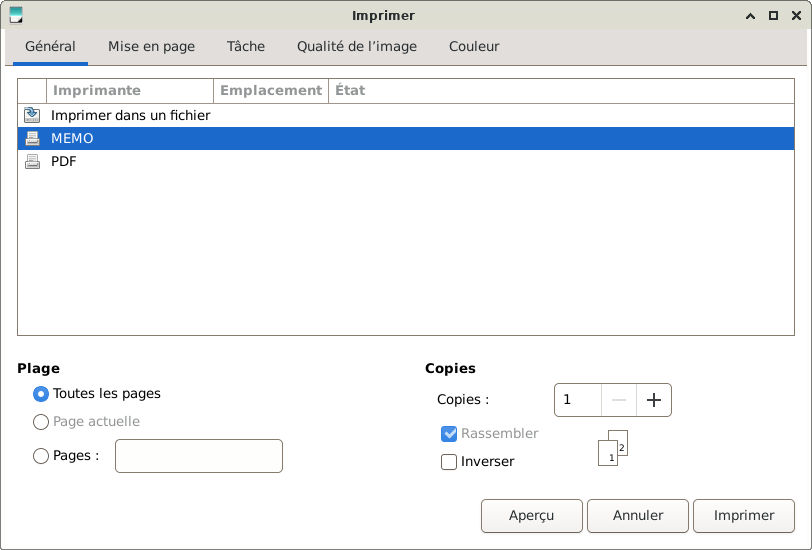
- Si l'imprimante a été configurée par défaut, elle doit être encadrée en bleu.
Si non, à l'aide d'un simple clic, sélectionner l'imprimante.
Si besoin se rendre au chapitre Imprimante :
L'interface graphique de configuration
- Dans cet exemple, l'imprimante sélectionnée est « MEMO » encadrée en bleu.
- Sous Plage
- Rond bleu « Toutes les pages » cela veut dire que toutes les pages seront imprimées
- Simple clic sur le rond « Page actuelle » seule la page visible sera imprimée
- Imprimer seulement quelques pages du document
Simple clic sur le rond « Pages » puis dans le rectangle nommé « d » saisir, à l'aide du clavier,
la page ou les pages à imprimer. Exemple, imprimer les 4 premières pages : 1-4
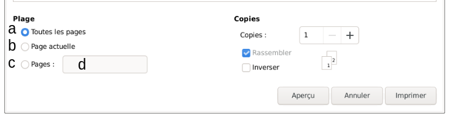
- Sous Copies
Simple clic > « + » augmente le nombre de copies à imprimer
Simple clic > « - » diminue le nombre de copies à imprimer
Si besoin, pour une copie inversée cocher « Inverser »
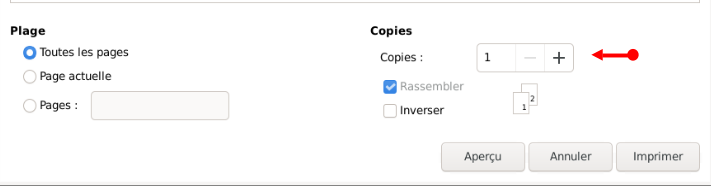
- Simple clic sur l'onglet > Mise en page
Il est maintenant souligné en bleu
Sous Agencement > Echelle à 100%, réduire l'échelle à 90% si le document à imprimer ne présente
aucune marge. A ajuster selon le besoin.
Sous Papier > Taille du papier, simple clic >A4, une liste déroulante apparaît avec différents
formats de papier. Sélectionner suivant le besoin.
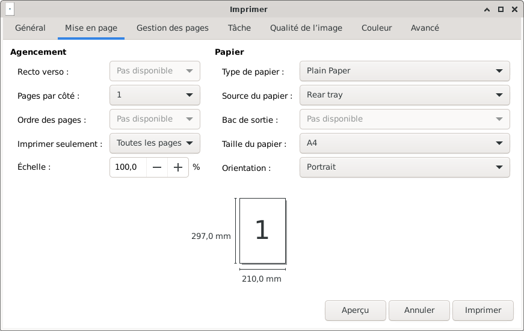
- Simple clic sur l'onglet > Gestion des pages
Il est maintenant souligné en bleu
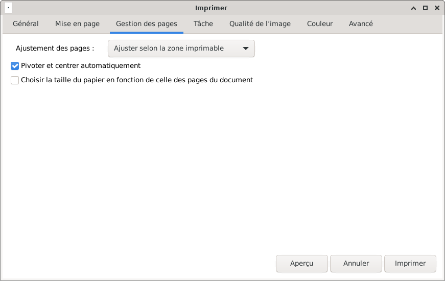
- Simple clic sur l'onglet > Tâche
Il est maintenant souligné en bleu
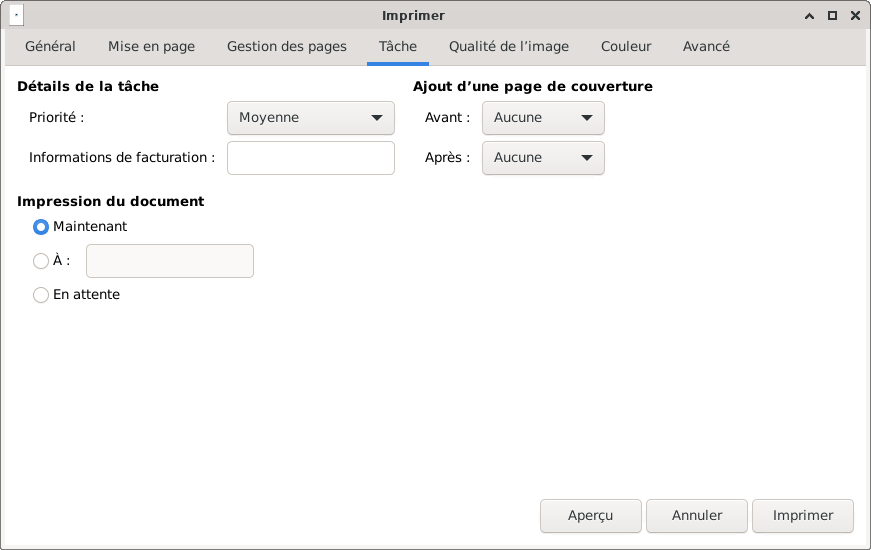
- Simple clic sur l'onglet > qualité de l'image
Il est maintenant souligné en bleu
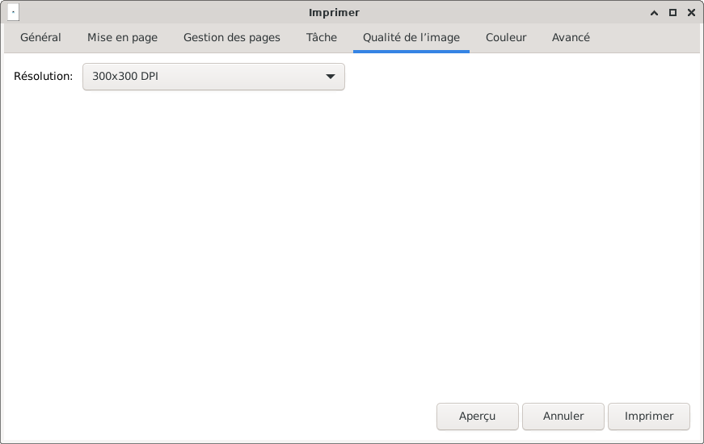
- Simple clic > « 300x300 DPI » une liste déroulante apparaît (par défaut 300x300 DPI est suffisant).
Si besoin, changer la qualité de l'impression
Information sur le DPI (Point_par_pouce)
Nota : Dans certaines applications, le choix se portera sur « Normal » ou « Best »...
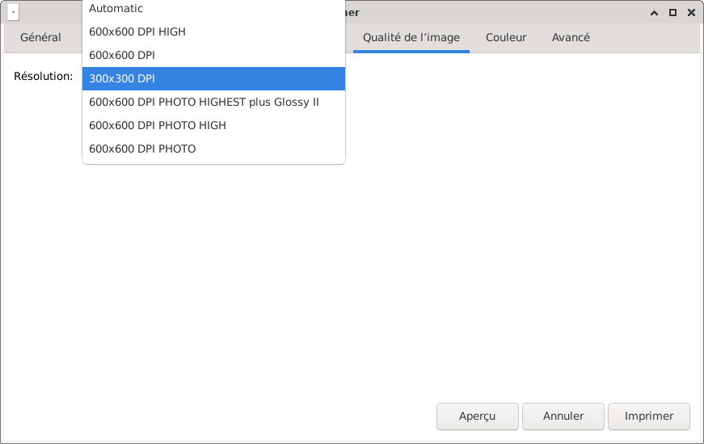
- Simple clic sur l'onglet > Couleur
Il est maintenant souligné en bleu
Color Model : « RGB Color » pour une impression en couleur
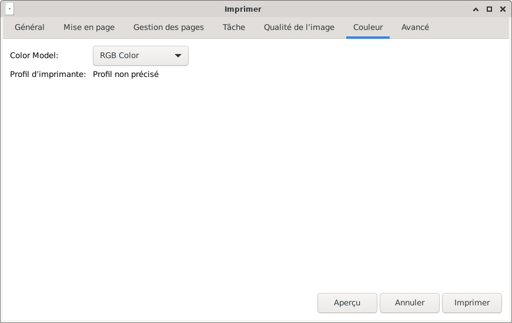
- Simple clic > « RGB Color » une liste déroulante apparaît
Simple clic > « Grayscale » pour une impression en noir et blanc
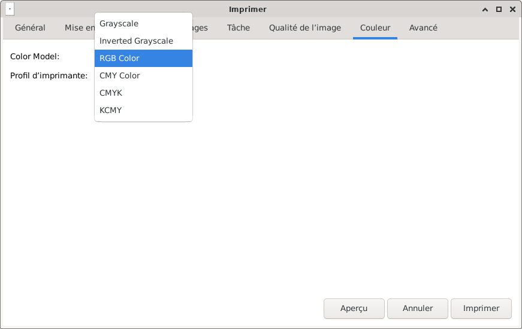
- Simple clic sur l'onglet > Avancé
Il est maintenant souligné en bleu
Positionner le pointeur de la souris sur la barre latérale, puis maintenir appuyé et faire glisser la souris ;
d'autres réglages seront accessibles.
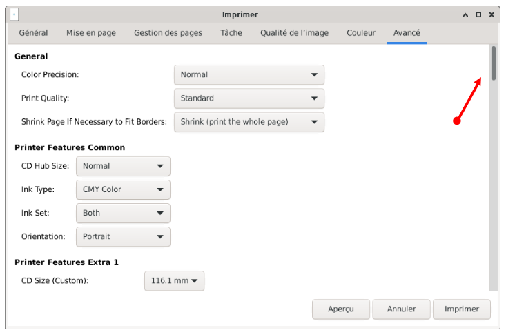
- Si tout est bon, simple clic > Imprimer
Nota : Avant d'imprimer, il est possible de faire un aperçu, simple clic > Aperçu.
Si besoin, se rendre au chapitre Imprimante :
L'état d'impression du document.

Retour
Informations sur le logiciel libre et
Merci.
Marques déposées :
Ce site ne fait pas partie de Debian, n'est pas produit par le projet
Debian, ni approuvé par le projet Debian.
Ce site n'est pas affilié à Debian. Debian est une marque déposée appartenant
à Software in the Public Interest, Inc.
Contribuer :
Ce site ne fait pas partie de XFCE, n'est pas produit par le projet
XFCE, ni approuvé par le projet XFCE.
Ce site n'est pas affilié à XFCE.
Ce site est juste réalisé par un passionné.